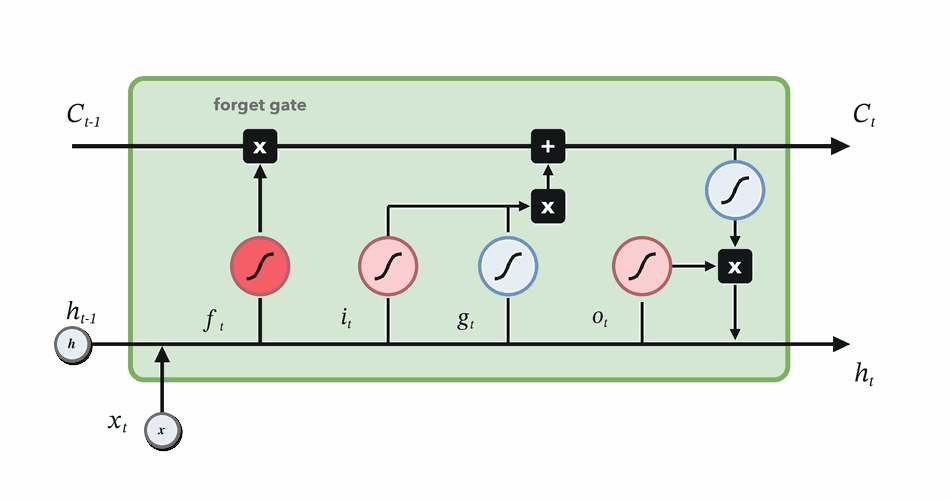
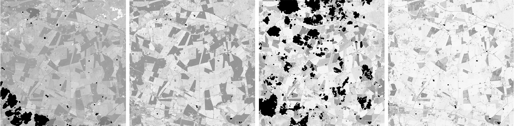
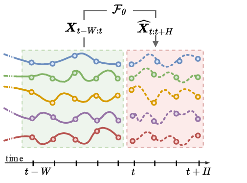
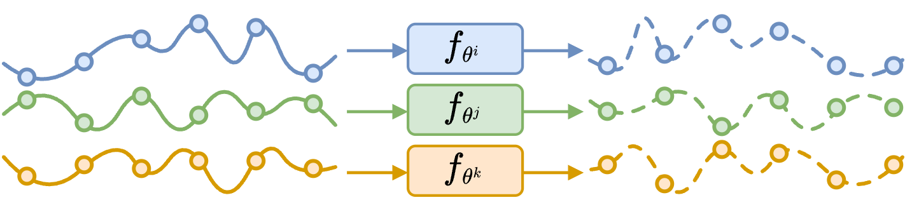
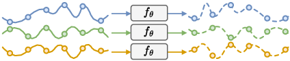
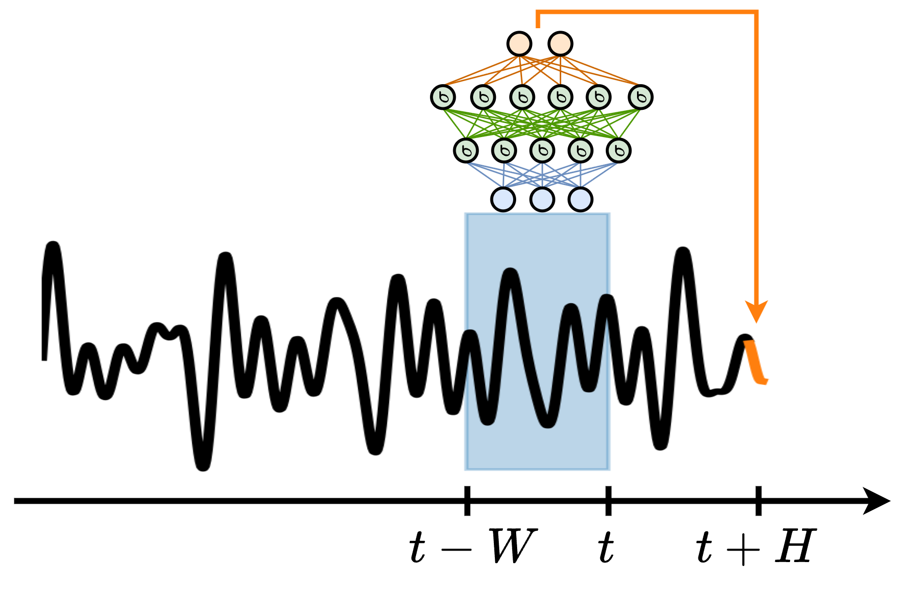
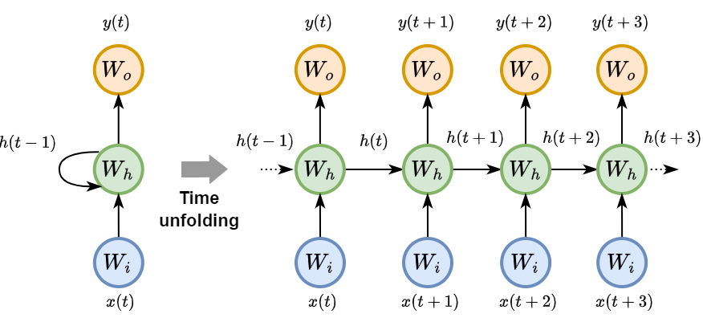
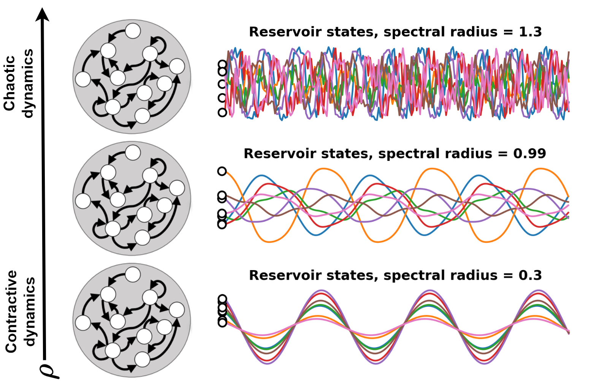

Forget gate
Decide which parts of the previous memory survive.
\(f_t = \sigma(W_f[h_{t-1}, x_t] + b_f)\)
\(f_t \odot C_{t-1}\)
Normalized Difference Vegetation Index (NDVI) quantifies vegetation by measuring the difference between near-infrared (which vegetation strongly reflects) and red light (which vegetation absorbs).

NDVI time series reveal vegetation dynamics that single images miss.

NDVI change over South Africa across a single year.

Load consumption profile on a backbone of the electricity network of Rome. The temperature-load relation is nonlinear; copying yesterday is the first baseline to beat.
The signal is often not in one observation, but in how observations change.

Past context is useful only relative to a prediction horizon.

Tailored, data inefficient.
\(\widehat{X}^{\,i}_{t:t+H}=\mathcal{F}_{\theta^i}(X^{\,i}_{t-W:t})\)

Shared, scalable.
\(\widehat{X}^{\,i}_{t:t+H}=\mathcal{F}_{\theta}(X^{\,i}_{t-W:t}, a^{\,i})\)
How should the model represent the past?


Memory helps, but training can be hard.

A small kernel scans space and reuses the same detector at every location.
The same learned kernel scans time to detect slopes, peaks, pulses, or changes.
The same learned kernel is applied at every time step.
A TCN grows memory by composing small filters across layers.
The receptive field is the maximum history that can affect one output.
For forecasting, every output must ignore observations from the future.
Causality is not just a layer option: preprocessing, normalization, and imputation must also respect time.
A temporal CNN acts like a learned bank of matched filters.
Good fit when local temporal shapes are informative and transferable across parcels.
Each token asks which other observations are relevant.
Attention selects observations by content; time encodings tell it when they occurred.
A Transformer does not scan or compress the sequence first: it builds direct token-to-token links.
| Model | How it uses the past | Main limitation |
|---|---|---|
| MLP window | Dense map from fixed lags | Choose \(W\); lag positions are fixed |
| RNN / LSTM | Compress past into \(h_t\) | Sequential bottleneck; long credit paths |
| TCN | Apply local filters over a receptive field | Context set by depth and dilation |
| Transformer | Retrieve directly from allowed tokens | \(T^2\) attention; needs time and masks |
Best fit: non-local dependencies, irregular observations, and tasks where different dates matter for different examples.
Transformer architecture: Vaswani et al., 2017.
Each observation becomes a token: what was measured, when it was observed, and whether attention may use it.
Clean peak-season observations stay available; cloudy dates are masked.
Without time encoding, attention sees a set of observations, not a temporal sequence.
S4: Gu et al., 2021. Mamba: Gu and Dao, 2023.
Monthly NDVI images from Sentinel-2 composites. Source: ESA EO Science for Society.
Growth stage
Phenology motifs
Long context

Before: March 23, 2015

After: May 26, 2015
NASA Earth Observatory images by Joshua Stevens, using Landsat data from the U.S. Geological Survey.
| Architecture | Memory mechanism | Parallelism | Good fit | Watch out |
|---|---|---|---|---|
| Window + MLP | Fixed explicit lags | High | Baselines; engineered features | Choosing \(P\) |
| RNN/GRU/LSTM | Learned recurrent state | Low across time | Streaming; latent stages | Hard long training |
| Reservoir/ESN | Random dynamical features | Medium | Limited labels; fast readouts | Tuning sensitive |
| TCN | Receptive field by depth/dilation | High | Phenology; local motifs | Context by design |
| Transformer | Direct attention over observed dates | High | Irregular dates; masks | Memory cost |
| SSM/Mamba | State space scan with selective memory | High / streaming | Long sequences; efficient context | Newer ecosystem |
Compress the past.
Scan temporal motifs.
Choose useful context.
For temporal data, architecture is a hypothesis about what kind of past matters.